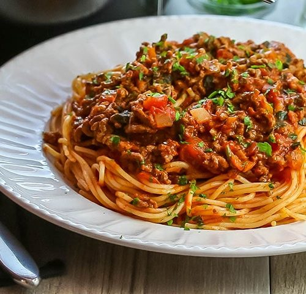

Return Home
Spaghetti Bolognese

Spaghetti is a classic "lazy dish" that honestly takes a little more work than most
people give it credit for. However, if you're careful and follow the recipe, you
don't have to be an Emeril Lagazzi or a Gordon Ramsay to make good, down-home
spaghetti.
Ingredients
- Spaghetti (dried)
- Ground meat
- Onions (diced)
- Garlic (freshly minced)
- Olive oil
- Water
Steps
- First, take the slices of bread and put them on a plate or cutting board.
- Next, if you will use mayo or mustard on your sandwich, spread the condiment in a thin later (to taste) on the slives of bread.
- After that, place slices of ham onto the open-faced sandwich (to taste).
- Finally, unite the two sides of the sandwich into on completed sandwich.
- Optional: Slice the sandwich from one corner to the opposite corner to make sandwich triangles, the superior way to consume a sandwich.